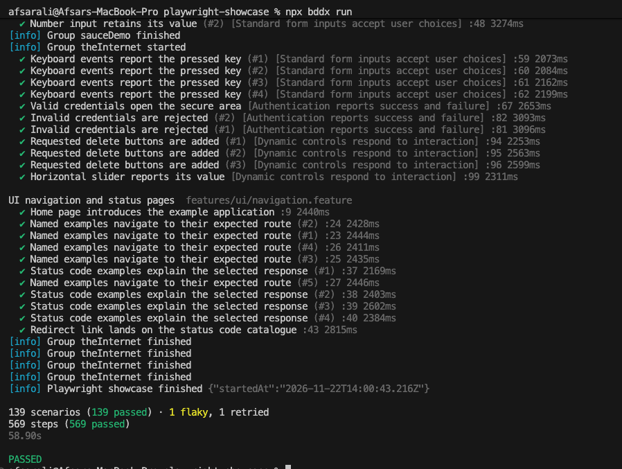

Getting started
Install Node.js, build bddr, create a project and run a feature file. About fifteen minutes on macOS, Windows or Linux.
System requirements
- Node.js
- 20.10 or newer for bddr itself. Use Node.js 22 or 24 (LTS) if you plan to use the Selenium plugin: current
selenium-webdriverreleases require Node.js 22 or newer. - npm
- Comes with Node.js. Check with
npm -v. - Operating system
- macOS, Windows 10 or 11, or Linux. bddr is plain Node.js and does not depend on the operating system. Browser plugins add their own requirements, listed below.
- Editor
- Any. VS Code works well with the TypeScript and Cucumber (Gherkin) extensions.
Extra requirements for browser testing
| Plugin | macOS | Windows | Notes |
|---|---|---|---|
@bddr/playwright |
macOS 14 or later | Windows 11, Windows Server 2019 or later, or WSL | Node.js 20, 22 or 24. Browsers are downloaded with npx playwright install. These are Playwright's requirements. |
@bddr/selenium |
Chrome, Firefox, Edge or Safari | Chrome, Firefox or Edge | Node.js 22 or newer. Selenium Manager downloads the matching driver on the first run. Safari needs safaridriver --enable once. |
@bddr/axios |
Any | Any | No browser. Needs network access to the API under test. |
Install Node.js
Skip this if node -v already prints 20.10 or newer (22 or newer for Selenium).
Download the LTS installer from nodejs.org, or use Homebrew:
$ brew install node@22
$ node -vDownload the LTS installer from nodejs.org, or use winget in PowerShell:
PS> winget install OpenJS.NodeJS.LTS
PS> node -vOpen a new PowerShell window after installing so node and npm are on the path.
Use your distribution's Node.js 22 package, the installers on nodejs.org, or a version manager such as nvm:
$ nvm install 22
$ node -vInstall bddr
bddr is published on npm, so there is nothing to clone or build. You add it to your own project in the next section. Two packages are enough to start:
@bddr/cliis thebddrcommand anddefineConfig.@bddr/runtimeis what step files import:Given,When,Then, hooks and fixtures.
Plugins for Playwright, Selenium and axios are separate packages, covered under Add browser or API testing.
Create your first project
A bddr project is an ordinary Node.js project with feature files, step files and a config. This one tests a shopping basket and needs no browser.
my-tests/
├─ package.json
├─ tsconfig.json
├─ bddr.config.ts
├─ features/
│ └─ basket.feature
└─ steps/
└─ basket.steps.ts-
package.json
Two bddr packages from npm: the command and the runtime your step files import. They bring
@bddr/coreand@bddr/reporterswith them.{ "name": "my-tests", "private": true, "type": "module", "scripts": { "test": "bddr run" }, "dependencies": { "@bddr/cli": "^0.1.0", "@bddr/runtime": "^0.1.0" }, "devDependencies": { "@types/node": "^22.20.5", "typescript": "~5.9.3" } } -
tsconfig.json
bddr runs TypeScript directly; this file is for your editor and for
tsc --noEmittype checks.{ "compilerOptions": { "target": "ES2022", "module": "NodeNext", "moduleResolution": "NodeNext", "lib": ["ES2023", "DOM", "ESNext.Decorators"], "strict": true, "noEmit": true, "skipLibCheck": true, "types": ["node"] }, "include": ["bddr.config.ts", "steps/**/*.ts"] } -
bddr.config.ts
import { defineConfig } from '@bddr/cli'; export default defineConfig({ features: 'features/**/*.feature', steps: 'steps/**/*.ts', reporters: ['console', ['html', { outputFile: 'reports/report.html' }]], }); -
A feature file
Feature: Shopping basket Customers add products to a basket and pay the total. Background: Given the catalogue: | product | price | | apple | 0.50 | | melon | 3.00 | @smoke Scenario: Add a single product When I add 2 "apple" Then the basket total is 1.00 Scenario Outline: Totals for different quantities When I add <qty> "<product>" Then the basket total is <total> Examples: | qty | product | total | | 4 | apple | 2.00 | | 2 | melon | 6.00 | -
Step definitions
A step is a pattern and a function. The first argument is the scenario context; the rest are the values the pattern captured.
import { strict as assert } from 'node:assert'; import { Given, Then, When, defineParameterType, type DataTable } from '@bddr/runtime'; // {money} turns "1.00" into 100 (cents) defineParameterType({ name: 'money', regexp: /\d+\.\d{2}/, transformer: (s) => Math.round(Number(s) * 100) }); Given('the catalogue:', (ctx, table: DataTable) => { const prices = Object.fromEntries(table.hashes().map((r) => [r['product'], Math.round(Number(r['price']) * 100)])); ctx.state.set('prices', prices); ctx.state.set('total', 0); }); When('I add {int} {string}', (ctx, qty: number, product: string) => { const prices = ctx.state.get<Record<string, number>>('prices'); ctx.state.set('total', ctx.state.get<number>('total') + qty * (prices[product] ?? 0)); }); Then('the basket total is {money}', (ctx, cents: number) => { assert.equal(ctx.state.get<number>('total'), cents); });
Run it
$ cd my-tests
$ npm install
$ npx bddr runbddr prints each scenario as it finishes and a summary at the end, and writes reports/report.html.

Some useful variations:
$ npx bddr run --tags @smoke # only scenarios tagged @smoke
$ npx bddr run features/basket.feature:11 # one scenario, by line
$ npx bddr run --set workers=4 # change any config value
$ npx bddr plan # show the schedule, run nothingPS> npx bddr run --tags '@smoke' # quote tags: @ means something in PowerShell
PS> npx bddr run features/basket.feature:11
PS> npx bddr run --set workers=4
PS> npx bddr planNotes for Windows
- Use PowerShell or Windows Terminal. The commands are the same as on macOS except where these docs show a Windows tab.
- Quote values that start with
@or contain spaces:--tags '@smoke and not @wip'. - JSON values for
--setneed single quotes outside, double quotes inside:--set 'groups.api.dependsOn=["health"]'. - Environment variables are set with
$env:NAME = 'value'instead ofNAME=value. - Paths in the config use forward slashes on every system:
features/**/*.feature.
Add browser or API testing
Install the plugin and the tool it wraps in your project, then list the plugin in the config. Its fixtures (page, driver, api ...) are then available in every step.
$ npm i -D @bddr/playwright playwright @playwright/test
$ npx playwright install chromiumimport { defineConfig } from '@bddr/cli';
import { playwright } from '@bddr/playwright';
export default defineConfig({
features: 'features/**/*.feature',
steps: 'steps/**/*.ts',
plugins: [playwright({ browser: 'chromium', context: { baseURL: 'https://example.com' } })],
});import { Given, Then } from '@bddr/runtime';
import '@bddr/playwright'; // types for page, expect ...
Given('I open the home page', async ({ page }) => {
await page.goto('/');
});
Then('the heading says {string}', async ({ page, expect }, text: string) => {
await expect(page.locator('h1')).toHaveText(text);
});$ npm i -D @bddr/selenium selenium-webdriverimport { defineConfig } from '@bddr/cli';
import { selenium } from '@bddr/selenium';
export default defineConfig({
features: 'features/**/*.feature',
steps: 'steps/**/*.ts',
plugins: [selenium({ browser: 'chrome', baseURL: 'https://example.com' })],
});import { strict as assert } from 'node:assert';
import { Given, Then } from '@bddr/runtime';
import '@bddr/selenium'; // types for driver, open, wait ...
Given('I open the home page', async ({ open }) => {
await open('/');
});
Then('the heading says {string}', async ({ wait, selenium: { By, until } }, text: string) => {
const h1 = await wait(until.elementLocated(By.css('h1')));
assert.equal(await h1.getText(), text);
});$ npm i -D @bddr/axios axiosimport { defineConfig } from '@bddr/cli';
import { axios } from '@bddr/axios';
export default defineConfig({
features: 'features/**/*.feature',
steps: 'steps/**/*.ts',
plugins: [axios({ baseURL: 'https://jsonplaceholder.typicode.com' })],
});import { strict as assert } from 'node:assert';
import { Then, When } from '@bddr/runtime';
import '@bddr/axios'; // types for api, newApi ...
When('I fetch post {int}', async ({ api, state }, id: number) => {
state.set('response', await api.get(`/posts/${id}`));
});
Then('the status is {int}', ({ state }, status: number) => {
assert.equal(state.get<{ status: number }>('response').status, status);
});If something goes wrong
| You see | Do this |
|---|---|
bddr: command not found or npx asks to install bddr | Run npm install in your project, and check that @bddr/cli is listed in package.json. |
Cannot find module '@bddr/runtime' | Install it in your project: npm i -D @bddr/runtime. |
Executable doesn't exist (Playwright) | Download the browser: npx playwright install chromium. On Linux also npx playwright install-deps. |
Fixture "page" is asynchronous and was not requested before use | Name the fixture in the step itself, ({ page }) or const { page } = ctx, instead of reading it inside a helper function. |
Safari: Could not create a session | Run safaridriver --enable once and allow remote automation in Safari's Develop menu. |
| Node version errors on install | Check node -v: 20.10 or newer, 22 or newer for Selenium. |
Where to go next
- The two complete example projects in the repository:
examples/playwright-showcase(139 scenarios, UI, API and both together) andexamples/selenium-showcase(33 scenarios). - The pages on groups, dependencies, serial features and retries, listed under Orchestration in the sidebar, as they are written.